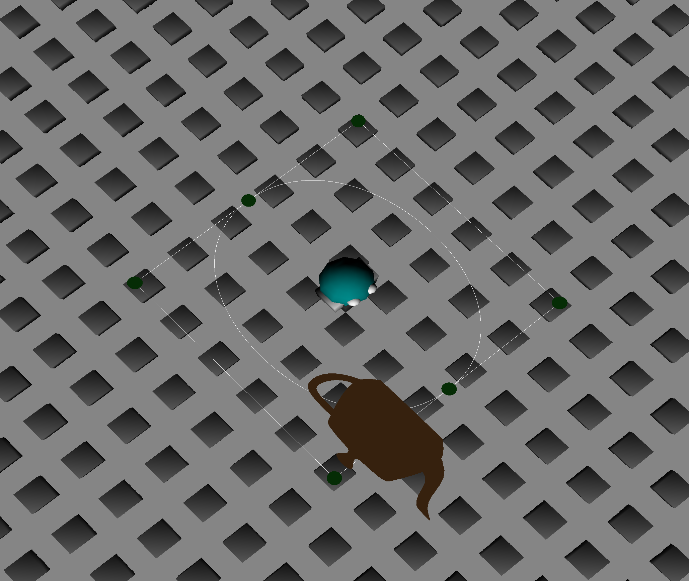

CSCI 441 - Computer GraphicsFall 2023 |
|
| | Home | Assignments | Leaderboard | Schedule | Resources | | |
DekuThis is my hero sign where we were asked to create a sign that displayed our hero's name in different colors and also a symbol within a 700x150 window! This is my UA Highschool for Lab00B! We were asked to create our hometown where our hero is from. I thought it had to be UA Highschool since that is where my hero Deku attends school and spends almost all of his time at training to become the greatest hero of all time! This is my hero avatar from A2. We were asked to create our hero that was interactive and was able to move using WASD and also react to the mouse. I also added if you click left shift and mouse click you can go through different backgrounds. This is my hero avatar from A3. We were asked to create our hero in 3D that was interactive and was able to move forward or backwards in the heading of the hero using W or S and A or D to rotate the hero. You could also change the Arcball Camera that was viewing the hero by rotating around ther hero or zooming in or out. This is our MP project that has all three of our heroes drawn to the environment. Our environment is drawn with the ground having rocks and trees randomly drawn. You can change between characters using the key C. You can also change the camera view using the key E. You can toggle the first person cam on using the key 1. You can control the views of the different cameras using the mouse or space for the free cam. You can toggle on the different lights using keys 2, 3, 4.  This is my A4 project. We were asked to create a skybox around our previous environment. We also were supposed to implement a Bezier curve that was centered around our hero and moved with the hero. We also were asked to implement toggling on and off the control points and curve which is clinked to C, and then to toggle on and off the curve itself which is linked to V. This is my A5 project. We were asked to create a game. I created a game where you have to visit every tile on the map and turn it green. If you turn them all green you win and grow and all the enemies die. However if you fall off the map or get touched by the enemies too much you will shrink and lose the game. You control the hero with WASD and control the camera with mouse and R and F to zoom. This is our Final Project. We created a game that allowed us to keep some of our environment from the midterm project that we were the most proud of including the lighthouse. We created a bridge game that you have to jump across and make it to the end to see the moon change to a blood moon. We have a bezier surface for our water that simulates waves that are textured. We also have our three lighthouses lighting the path to make it a little harder. | |